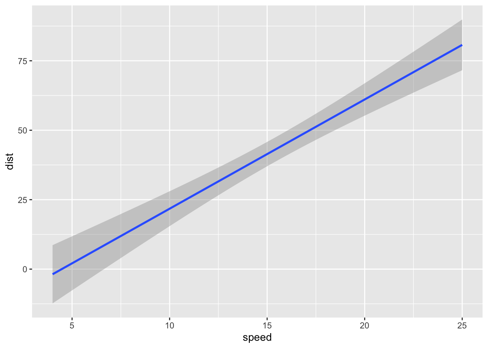

Hello R Markdown
Awesome Me
January 31, 2023
R Markdown: Intro
This is a paragraph in an R Markdown document.
ggplot exmaple
Below is a code chunk:
library(tidyverse)## ── Attaching packages ─────────────────────────────────────── tidyverse 1.3.2 ──
## ✔ ggplot2 3.4.0 ✔ purrr 1.0.1
## ✔ tibble 3.1.8 ✔ dplyr 1.0.10
## ✔ tidyr 1.2.1 ✔ stringr 1.5.0
## ✔ readr 2.1.3 ✔ forcats 0.5.2
## ── Conflicts ────────────────────────────────────────── tidyverse_conflicts() ──
## ✖ dplyr::filter() masks stats::filter()
## ✖ dplyr::lag() masks stats::lag()fit <- lm(dist ~ speed, data = cars)
b <- coef(fit)
ggplot(cars) +
geom_smooth( aes( x = speed,
y = dist ),
method = lm)## `geom_smooth()` using formula = 'y ~ x'
The slope of the regression is 3.9324088.
Next Steps
Next Next Steps
colorize <- function(x, color) {
if (knitr::is_latex_output()) {
sprintf("\\textcolor{%s}{%s}", color, x)
} else if (knitr::is_html_output()) {
sprintf("<span style='color: %s;'>%s</span>", color,
x)
} else x
}some words in blue-ish
figures
markdown with div width

markdown with css right
some text left
some text left

markdown with css img

some text here


The following quote is the final paragraph of Darwin’s The Origin of Species. I’ve added some highlighted words in red which I think really make a good point.
Thus, from the war of nature, from famine and death, the most exalted object which we are capable of conceiving, namely, the production of the higher animals, directly follows. There is grandeur in this view of life, with its several powers, having been originally breathed into a few forms or into one; and that, whilst this planet has gone cycling on according to the fixed law of gravity, from so simple a beginning endless forms most beautiful and most wonderful have been, and are being, evolved.
I’ve always thought that this is an example of how good science writing can be beautiful as well as functional.